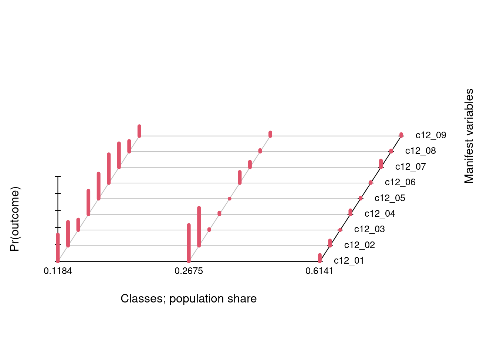
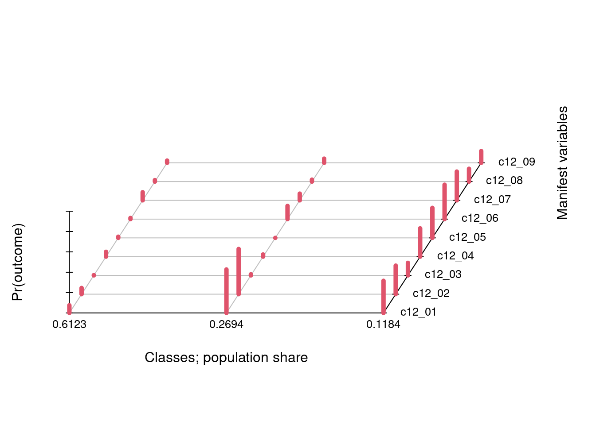
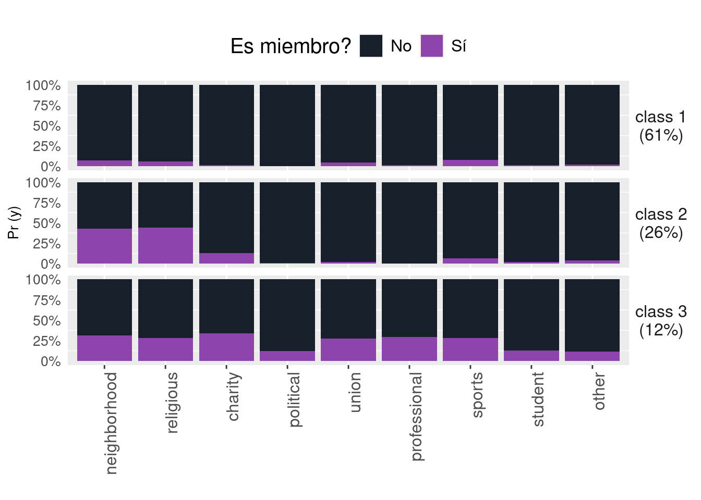
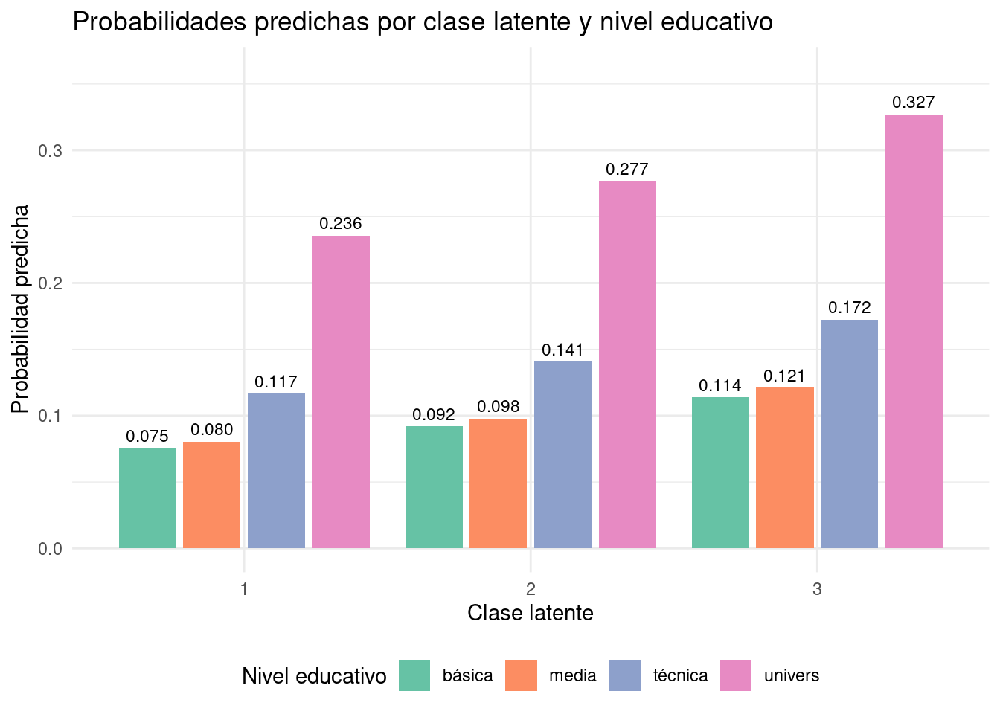
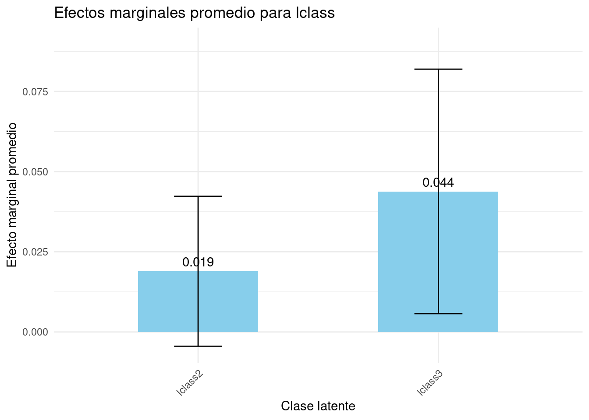
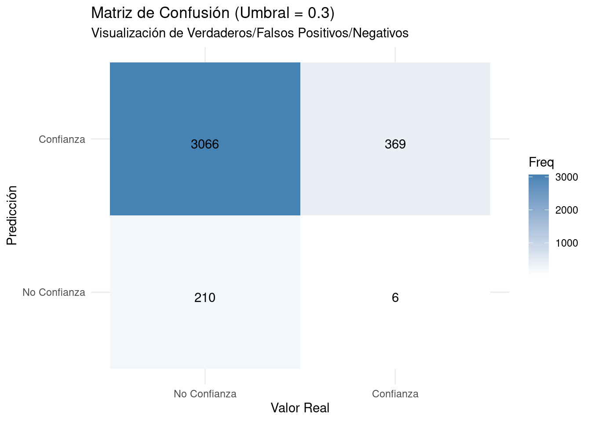
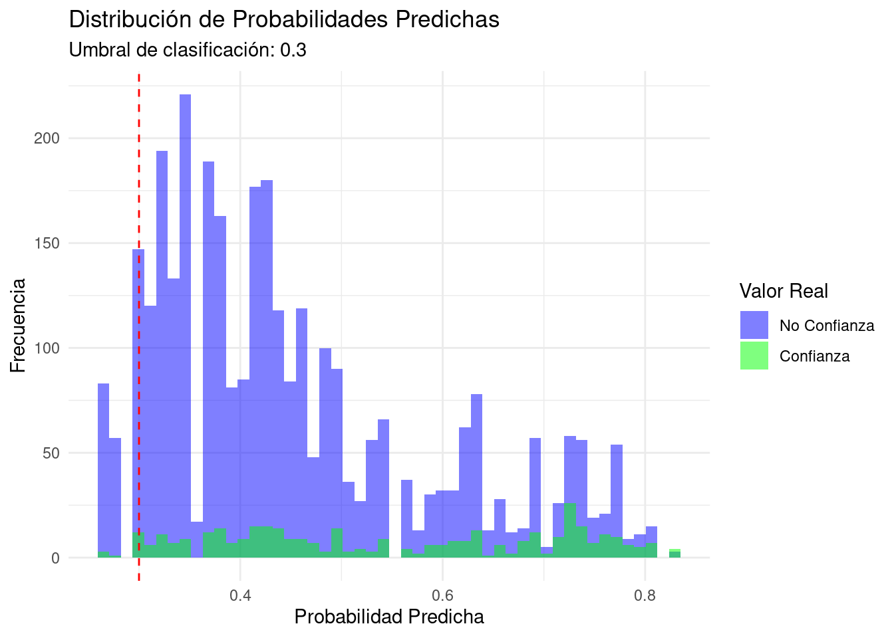
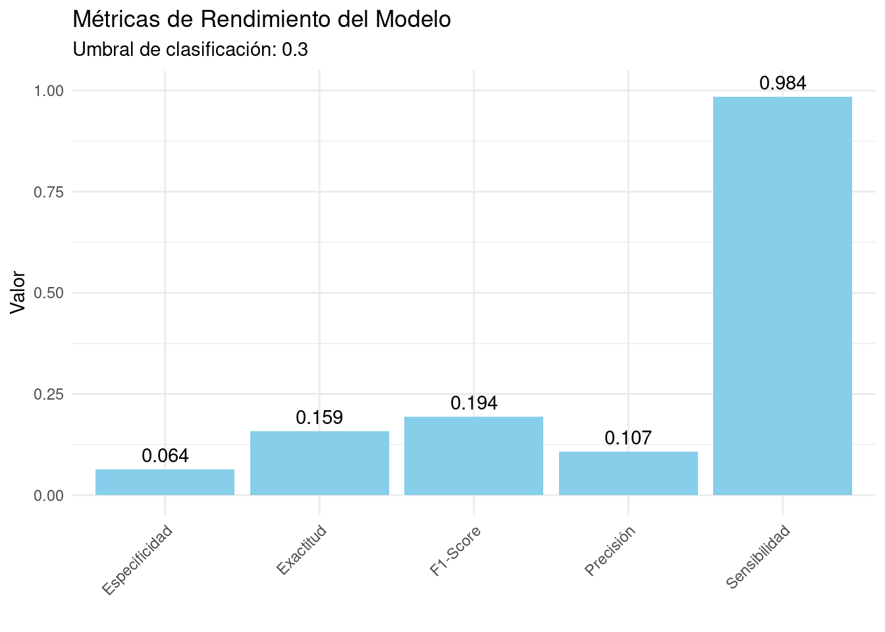
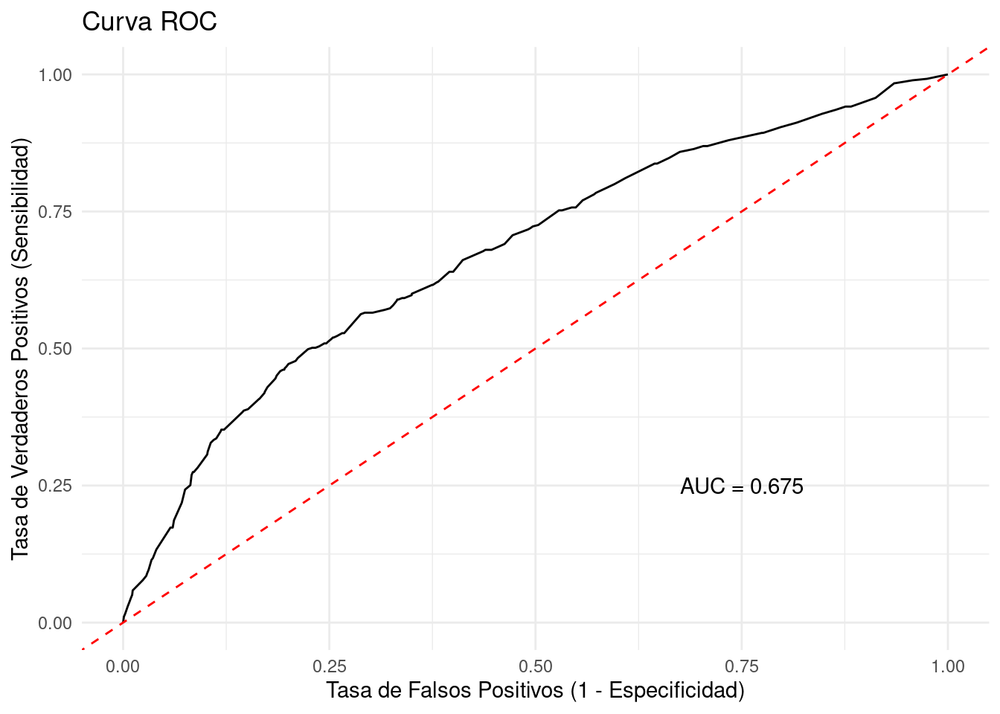

```{r}
# librerías
library(tidyverse)
library(tidymodels)
library(gtsummary)
library(marginaleffects)
library(kableExtra)
library(poLCA)
library(nnet)
library(httr)
library(utils)
library(margins)
#install.packages("pROC")
library(pROC)
#install.packages("ROSE")
library(ROSE)
library(reshape2)
```1 Librerías
2 Cargamos datos
```{r}
#ELSOC 2018
url <- "https://github.com/rcantillan/ricantillan.rbind.io/raw/main/dat/ELSOC/ELSOC_W03_v2.00_R.RData"
response <- GET(url)
local_path <- "ELSOC_W03_v2.00_R.RData"
writeBin(response$content, local_path)
load("ELSOC_W03_v2.00_R.RData")
```3 Recodificación y selección de variables
```{r}
# recod, and select
a<-elsoc_2018%>%
#mutate_at(vars(matches("c12")), ~ifelse(. > 1, 1, 2)) %>%
dplyr::mutate (conf_gral = case_when(c02 == 1 ~ 1,
c02 == 2 ~ 0,
c02 == 3 ~ 0)) %>%
#dplyr::mutate (extranjero = case_when(m45 %in% 1 ~ 0,
# m45 %in% 2 :8 ~ 1)) %>%
dplyr::mutate (mujer = case_when(m0_sexo == 1 ~ 0,
m0_sexo == 2 ~ 1)) %>%
dplyr::mutate (edad = case_when(m0_edad %in% 18:24 ~ "18_24",
m0_edad %in% 25:34 ~ "25_34",
m0_edad %in% 35:44 ~ "35_44",
m0_edad %in% 45:54 ~ "45_54",
m0_edad %in% 55:64 ~ "55_64",
m0_edad %in% 65:88 ~ "65")) %>%
dplyr::mutate (nivel_educ = case_when(m01 %in% 1 :3 ~ "básica",
m01 %in% 4 :5 ~ "media",
m01 %in% 6 :7 ~ "técnica",
m01 %in% 8 :10 ~ "univers")) %>%
mutate(across(matches("c12_"),
~case_when(
. %in% c(-999, -888) ~ NA_real_, # No Responde y No Sabe = NA
. == 3 ~ 2, # Si es mayor que 1 (es decir, 2 o 3), asigna 1
TRUE ~ 1 # Para el resto (1), asigna 2
))) %>%
dplyr::select(idencuesta, mujer, edad, nivel_educ, c12_01:c12_09, conf_gral)
#elsoc_2018$c02
# set NA
a[a=="-999"] <- NA
a[a=="-888"] <- NA
# delete NA in covariable
a<-a %>% drop_na(mujer, edad, nivel_educ, c12_01:c12_09)
```4 Modelo de clases latentes
```{r, message = FALSE}
set.seed(1234)
# usamos poLCA para realizar la clasificación
f <- cbind(c12_01, c12_02, c12_03, c12_04, c12_05,
c12_06, c12_07, c12_08, c12_09) ~ NULL
# generamos los modelos de clases latentes
lca1 <- poLCA(f,a,nclass=1,graphs=F)
lca2 <- poLCA(f,a,nclass=2,graphs=F)
lca3 <- poLCA(f,a,nclass=3,graphs=F)
lca4 <- poLCA(f,a,nclass=4,graphs=F)
lca5 <- poLCA(f,a,nclass=5,graphs=F)
lca6 <- poLCA(f,a,nclass=6,graphs=F)
## Estadísticos de ajuste (todos los modelos)
AIC.1 <-as.numeric(lca1$aic)
AIC.2 <-as.numeric(lca2$aic)
AIC.3 <-as.numeric(lca3$aic)
AIC.4 <-as.numeric(lca4$aic)
AIC.5 <-as.numeric(lca5$aic)
AIC.6 <-as.numeric(lca6$aic)
BIC.1 <-as.numeric(lca1$bic)
BIC.2 <-as.numeric(lca2$bic)
BIC.3 <-as.numeric(lca3$bic)
BIC.4 <-as.numeric(lca4$bic)
BIC.5 <-as.numeric(lca5$bic)
BIC.6 <-as.numeric(lca6$bic)
llik.1 <-as.numeric(lca1$llik)
llik.2 <-as.numeric(lca2$llik)
llik.3 <-as.numeric(lca3$llik)
llik.4 <-as.numeric(lca4$llik)
llik.5 <-as.numeric(lca5$llik)
llik.6 <-as.numeric(lca6$llik)
chisq.1 <- as.numeric(lca1$Chisq)
chisq.2 <- as.numeric(lca2$Chisq)
chisq.3 <- as.numeric(lca3$Chisq)
chisq.4 <- as.numeric(lca4$Chisq)
chisq.5 <- as.numeric(lca5$Chisq)
chisq.6 <- as.numeric(lca6$Chisq)
G.1 <- as.numeric(lca1$Gsq)
G.2 <- as.numeric(lca2$Gsq)
G.3 <- as.numeric(lca3$Gsq)
G.4 <- as.numeric(lca4$Gsq)
G.5 <- as.numeric(lca5$Gsq)
G.6 <- as.numeric(lca6$Gsq)
n.obs1 <- as.numeric(lca1$Nobs)
n.obs2 <- as.numeric(lca2$Nobs)
n.obs3 <- as.numeric(lca3$Nobs)
n.obs4 <- as.numeric(lca4$Nobs)
n.obs5 <- as.numeric(lca5$Nobs)
n.obs6 <- as.numeric(lca6$Nobs)
#Creación de Vectores para TABLA DE COMPARACIÓN
AIC <- c(AIC.1,AIC.2,AIC.3,AIC.4,AIC.5,AIC.6)
BIC <- c(BIC.1,BIC.2,BIC.3,BIC.4,BIC.5,BIC.6)
llik <- c(llik.1,llik.2,llik.3,llik.4,llik.5,llik.6)
chi.cuadrado <- c(chisq.1,chisq.2,chisq.3,chisq.4,chisq.5,chisq.6)
G2 <- c(G.1,G.2,G.3,G.4,G.5,G.6)
N <- c(n.obs1,n.obs2,n.obs3,n.obs4,n.obs5,n.obs6)
Modelos <- c("1 clase", "2 clases", "3 clases", "4 clases", "5 clases","6 clases")
```Conditional item response (column) probabilities,
by outcome variable, for each class (row)
$c12_01
Pr(1) Pr(2)
class 1: 0.8019 0.1981
$c12_02
Pr(1) Pr(2)
class 1: 0.8098 0.1902
$c12_03
Pr(1) Pr(2)
class 1: 0.981 0.019
$c12_04
Pr(1) Pr(2)
class 1: 0.9322 0.0678
$c12_05
Pr(1) Pr(2)
class 1: 0.9581 0.0419
$c12_06
Pr(1) Pr(2)
class 1: 0.9181 0.0819
$c12_07
Pr(1) Pr(2)
class 1: 0.8999 0.1001
$c12_08
Pr(1) Pr(2)
class 1: 0.9712 0.0288
$c12_09
Pr(1) Pr(2)
class 1: 0.9619 0.0381
Estimated class population shares
1
Predicted class memberships (by modal posterior prob.)
1
=========================================================
Fit for 1 latent classes:
=========================================================
number of observations: 3675
number of estimated parameters: 9
residual degrees of freedom: 502
maximum log-likelihood: -8826.037
AIC(1): 17670.07
BIC(1): 17725.96
G^2(1): 870.7513 (Likelihood ratio/deviance statistic)
X^2(1): 15056988 (Chi-square goodness of fit)
Conditional item response (column) probabilities,
by outcome variable, for each class (row)
$c12_01
Pr(1) Pr(2)
class 1: 0.8516 0.1484
class 2: 0.6138 0.3862
$c12_02
Pr(1) Pr(2)
class 1: 0.8536 0.1464
class 2: 0.6442 0.3558
$c12_03
Pr(1) Pr(2)
class 1: 0.9979 0.0021
class 2: 0.9167 0.0833
$c12_04
Pr(1) Pr(2)
class 1: 0.9615 0.0385
class 2: 0.8216 0.1784
$c12_05
Pr(1) Pr(2)
class 1: 0.9929 0.0071
class 2: 0.8262 0.1738
$c12_06
Pr(1) Pr(2)
class 1: 0.9799 0.0201
class 2: 0.6843 0.3157
$c12_07
Pr(1) Pr(2)
class 1: 0.9277 0.0723
class 2: 0.7946 0.2054
$c12_08
Pr(1) Pr(2)
class 1: 0.9872 0.0128
class 2: 0.9105 0.0895
$c12_09
Pr(1) Pr(2)
class 1: 0.9769 0.0231
class 2: 0.9053 0.0947
Estimated class population shares
0.791 0.209
Predicted class memberships (by modal posterior prob.)
0.855 0.145
=========================================================
Fit for 2 latent classes:
=========================================================
number of observations: 3675
number of estimated parameters: 19
residual degrees of freedom: 492
maximum log-likelihood: -8629.254
AIC(2): 17296.51
BIC(2): 17414.48
G^2(2): 477.1844 (Likelihood ratio/deviance statistic)
X^2(2): 8181.793 (Chi-square goodness of fit)
Conditional item response (column) probabilities,
by outcome variable, for each class (row)
$c12_01
Pr(1) Pr(2)
class 1: 0.6836 0.3164
class 2: 0.9232 0.0768
class 3: 0.5691 0.4309
$c12_02
Pr(1) Pr(2)
class 1: 0.7194 0.2806
class 2: 0.9373 0.0627
class 3: 0.5498 0.4502
$c12_03
Pr(1) Pr(2)
class 1: 0.8765 0.1235
class 2: 0.9973 0.0027
class 3: 0.9897 0.0103
$c12_04
Pr(1) Pr(2)
class 1: 0.7225 0.2775
class 2: 0.9525 0.0475
class 3: 0.9795 0.0205
$c12_05
Pr(1) Pr(2)
class 1: 0.7060 0.2940
class 2: 0.9887 0.0113
class 3: 1.0000 0.0000
$c12_06
Pr(1) Pr(2)
class 1: 0.6619 0.3381
class 2: 0.9881 0.0119
class 3: 0.8688 0.1312
$c12_07
Pr(1) Pr(2)
class 1: 0.7174 0.2826
class 2: 0.9201 0.0799
class 3: 0.9347 0.0653
$c12_08
Pr(1) Pr(2)
class 1: 0.8743 0.1257
class 2: 0.9855 0.0145
class 3: 0.9812 0.0188
$c12_09
Pr(1) Pr(2)
class 1: 0.8846 0.1154
class 2: 0.9780 0.0220
class 3: 0.9590 0.0410
Estimated class population shares
0.1186 0.619 0.2623
Predicted class memberships (by modal posterior prob.)
0.0732 0.6335 0.2933
=========================================================
Fit for 3 latent classes:
=========================================================
number of observations: 3675
number of estimated parameters: 29
residual degrees of freedom: 482
maximum log-likelihood: -8567.52
AIC(3): 17193.04
BIC(3): 17373.11
G^2(3): 353.7162 (Likelihood ratio/deviance statistic)
X^2(3): 2524.807 (Chi-square goodness of fit)
ALERT: iterations finished, MAXIMUM LIKELIHOOD NOT FOUND
Conditional item response (column) probabilities,
by outcome variable, for each class (row)
$c12_01
Pr(1) Pr(2)
class 1: 0.5897 0.4103
class 2: 0.9497 0.0503
class 3: 0.7195 0.2805
class 4: 0.6751 0.3249
$c12_02
Pr(1) Pr(2)
class 1: 0.6146 0.3854
class 2: 0.9451 0.0549
class 3: 0.7412 0.2588
class 4: 0.6772 0.3228
$c12_03
Pr(1) Pr(2)
class 1: 0.9838 0.0162
class 2: 0.9985 0.0015
class 3: 0.8908 0.1092
class 4: 0.8239 0.1761
$c12_04
Pr(1) Pr(2)
class 1: 0.9697 0.0303
class 2: 0.9555 0.0445
class 3: 0.6679 0.3321
class 4: 0.8232 0.1768
$c12_05
Pr(1) Pr(2)
class 1: 1.0000 0.0000
class 2: 0.9920 0.0080
class 3: 0.6213 0.3787
class 4: 0.7916 0.2084
$c12_06
Pr(1) Pr(2)
class 1: 0.8700 0.1300
class 2: 0.9940 0.0060
class 3: 0.7039 0.2961
class 4: 0.5322 0.4678
$c12_07
Pr(1) Pr(2)
class 1: 0.9192 0.0808
class 2: 0.9212 0.0788
class 3: 0.7952 0.2048
class 4: 0.3550 0.6450
$c12_08
Pr(1) Pr(2)
class 1: 0.9764 0.0236
class 2: 0.9853 0.0147
class 3: 1.0000 0.0000
class 4: 0.2308 0.7692
$c12_09
Pr(1) Pr(2)
class 1: 0.9569 0.0431
class 2: 0.9789 0.0211
class 3: 0.9108 0.0892
class 4: 0.7727 0.2273
Estimated class population shares
0.3405 0.5531 0.09 0.0165
Predicted class memberships (by modal posterior prob.)
0.3189 0.6109 0.0558 0.0144
=========================================================
Fit for 4 latent classes:
=========================================================
number of observations: 3675
number of estimated parameters: 39
residual degrees of freedom: 472
maximum log-likelihood: -8547.141
AIC(4): 17172.28
BIC(4): 17414.44
G^2(4): 312.9582 (Likelihood ratio/deviance statistic)
X^2(4): 944.5943 (Chi-square goodness of fit)
ALERT: iterations finished, MAXIMUM LIKELIHOOD NOT FOUND
Conditional item response (column) probabilities,
by outcome variable, for each class (row)
$c12_01
Pr(1) Pr(2)
class 1: 0.7399 0.2601
class 2: 0.6572 0.3428
class 3: 0.5531 0.4469
class 4: 0.6372 0.3628
class 5: 0.8916 0.1084
$c12_02
Pr(1) Pr(2)
class 1: 0.7072 0.2928
class 2: 0.7775 0.2225
class 3: 0.0983 0.9017
class 4: 0.5819 0.4181
class 5: 0.9379 0.0621
$c12_03
Pr(1) Pr(2)
class 1: 0.8863 0.1137
class 2: 0.9329 0.0671
class 3: 1.0000 0.0000
class 4: 0.8554 0.1446
class 5: 1.0000 0.0000
$c12_04
Pr(1) Pr(2)
class 1: 0.6454 0.3546
class 2: 0.8763 0.1237
class 3: 0.9923 0.0077
class 4: 0.7812 0.2188
class 5: 0.9584 0.0416
$c12_05
Pr(1) Pr(2)
class 1: 0.0040 0.9960
class 2: 1.0000 0.0000
class 3: 1.0000 0.0000
class 4: 0.7395 0.2605
class 5: 0.9932 0.0068
$c12_06
Pr(1) Pr(2)
class 1: 0.7262 0.2738
class 2: 0.7386 0.2614
class 3: 0.8895 0.1105
class 4: 0.4055 0.5945
class 5: 0.9963 0.0037
$c12_07
Pr(1) Pr(2)
class 1: 0.7635 0.2365
class 2: 0.8475 0.1525
class 3: 0.9585 0.0415
class 4: 0.1555 0.8445
class 5: 0.9239 0.0761
$c12_08
Pr(1) Pr(2)
class 1: 0.9821 0.0179
class 2: 0.9525 0.0475
class 3: 0.9839 0.0161
class 4: 0.0047 0.9953
class 5: 0.9860 0.0140
$c12_09
Pr(1) Pr(2)
class 1: 0.9173 0.0827
class 2: 0.9233 0.0767
class 3: 0.9656 0.0344
class 4: 0.6981 0.3019
class 5: 0.9792 0.0208
Estimated class population shares
0.0356 0.2069 0.0999 0.0077 0.6498
Predicted class memberships (by modal posterior prob.)
0.04 0.0852 0.1535 0.0071 0.7143
=========================================================
Fit for 5 latent classes:
=========================================================
number of observations: 3675
number of estimated parameters: 49
residual degrees of freedom: 462
maximum log-likelihood: -8537.025
AIC(5): 17172.05
BIC(5): 17476.31
G^2(5): 292.7257 (Likelihood ratio/deviance statistic)
X^2(5): 628.157 (Chi-square goodness of fit)
ALERT: iterations finished, MAXIMUM LIKELIHOOD NOT FOUND
Conditional item response (column) probabilities,
by outcome variable, for each class (row)
$c12_01
Pr(1) Pr(2)
class 1: 0.6549 0.3451
class 2: 0.5763 0.4237
class 3: 0.6327 0.3673
class 4: 0.8598 0.1402
class 5: 0.9355 0.0645
class 6: 0.4471 0.5529
$c12_02
Pr(1) Pr(2)
class 1: 0.8977 0.1023
class 2: 0.3119 0.6881
class 3: 0.7536 0.2464
class 4: 0.6464 0.3536
class 5: 0.9091 0.0909
class 6: 0.5266 0.4734
$c12_03
Pr(1) Pr(2)
class 1: 0.9258 0.0742
class 2: 0.7297 0.2703
class 3: 0.9059 0.0941
class 4: 0.8751 0.1249
class 5: 1.0000 0.0000
class 6: 1.0000 0.0000
$c12_04
Pr(1) Pr(2)
class 1: 0.9180 0.0820
class 2: 0.6387 0.3613
class 3: 0.2937 0.7063
class 4: 1.0000 0.0000
class 5: 0.9566 0.0434
class 6: 0.9765 0.0235
$c12_05
Pr(1) Pr(2)
class 1: 0.9564 0.0436
class 2: 0.5643 0.4357
class 3: 0.5722 0.4278
class 4: 0.7841 0.2159
class 5: 0.9917 0.0083
class 6: 1.0000 0.0000
$c12_06
Pr(1) Pr(2)
class 1: 0.8955 0.1045
class 2: 0.0000 1.0000
class 3: 0.7162 0.2838
class 4: 0.6044 0.3956
class 5: 0.9911 0.0089
class 6: 0.8597 0.1403
$c12_07
Pr(1) Pr(2)
class 1: 0.6656 0.3344
class 2: 0.1421 0.8579
class 3: 0.8130 0.1870
class 4: 0.8091 0.1909
class 5: 0.9344 0.0656
class 6: 0.9510 0.0490
$c12_08
Pr(1) Pr(2)
class 1: 0.8163 0.1837
class 2: 0.0000 1.0000
class 3: 1.0000 0.0000
class 4: 0.9571 0.0429
class 5: 0.9929 0.0071
class 6: 0.9828 0.0172
$c12_09
Pr(1) Pr(2)
class 1: 0.9070 0.0930
class 2: 0.6401 0.3599
class 3: 0.8992 0.1008
class 4: 0.9410 0.0590
class 5: 0.9795 0.0205
class 6: 0.9546 0.0454
Estimated class population shares
0.0802 0.0036 0.0404 0.0667 0.6196 0.1895
Predicted class memberships (by modal posterior prob.)
0.0397 0.0035 0.0307 0.0506 0.7061 0.1693
=========================================================
Fit for 6 latent classes:
=========================================================
number of observations: 3675
number of estimated parameters: 59
residual degrees of freedom: 452
maximum log-likelihood: -8528.939
AIC(6): 17175.88
BIC(6): 17542.23
G^2(6): 276.5544 (Likelihood ratio/deviance statistic)
X^2(6): 372.7709 (Chi-square goodness of fit)
ALERT: iterations finished, MAXIMUM LIKELIHOOD NOT FOUND
```{r}
#CREACIÓN TABLA ESTADÍSTICOS DE AJUSTE MODELOS TODAS LAS VARIABLES
fit.indices <- data.frame(Modelos,AIC,BIC,llik,chi.cuadrado,G2,N)
knitr::kable(fit.indices, caption = "Indicadores de ajuste de los modelos")
```| Modelos | AIC | BIC | llik | chi.cuadrado | G2 | N |
|---|---|---|---|---|---|---|
| 1 clase | 17670.07 | 17725.96 | -8826.037 | 1.505699e+07 | 870.7513 | 3675 |
| 2 clases | 17296.51 | 17414.48 | -8629.254 | 8.181793e+03 | 477.1844 | 3675 |
| 3 clases | 17193.04 | 17373.11 | -8567.520 | 2.524807e+03 | 353.7162 | 3675 |
| 4 clases | 17172.28 | 17414.44 | -8547.141 | 9.445943e+02 | 312.9582 | 3675 |
| 5 clases | 17172.05 | 17476.31 | -8537.025 | 6.281570e+02 | 292.7257 | 3675 |
| 6 clases | 17175.88 | 17542.23 | -8528.939 | 3.727709e+02 | 276.5544 | 3675 |
4.1 Mejor ajuste
```{r}
# best model.
lca3 <- poLCA(f,a,nclass=3,graphs=T)
```Conditional item response (column) probabilities,
by outcome variable, for each class (row)
$c12_01
Pr(1) Pr(2)
class 1: 0.6840 0.3160
class 2: 0.5720 0.4280
class 3: 0.9248 0.0752
$c12_02
Pr(1) Pr(2)
class 1: 0.7194 0.2806
class 2: 0.5542 0.4458
class 3: 0.9386 0.0614
$c12_03
Pr(1) Pr(2)
class 1: 0.8765 0.1235
class 2: 0.9896 0.0104
class 3: 0.9973 0.0027
$c12_04
Pr(1) Pr(2)
class 1: 0.7222 0.2778
class 2: 0.9791 0.0209
class 3: 0.9524 0.0476
$c12_05
Pr(1) Pr(2)
class 1: 0.7053 0.2947
class 2: 1.0000 0.0000
class 3: 0.9886 0.0114
$c12_06
Pr(1) Pr(2)
class 1: 0.6620 0.3380
class 2: 0.8698 0.1302
class 3: 0.9885 0.0115
$c12_07
Pr(1) Pr(2)
class 1: 0.7173 0.2827
class 2: 0.9343 0.0657
class 3: 0.9201 0.0799
$c12_08
Pr(1) Pr(2)
class 1: 0.8742 0.1258
class 2: 0.9812 0.0188
class 3: 0.9855 0.0145
$c12_09
Pr(1) Pr(2)
class 1: 0.8846 0.1154
class 2: 0.9591 0.0409
class 3: 0.9780 0.0220
Estimated class population shares
0.1184 0.2675 0.6141
Predicted class memberships (by modal posterior prob.)
0.0718 0.2947 0.6335
=========================================================
Fit for 3 latent classes:
=========================================================
number of observations: 3675
number of estimated parameters: 29
residual degrees of freedom: 482
maximum log-likelihood: -8567.518
AIC(3): 17193.04
BIC(3): 17373.11
G^2(3): 353.7121 (Likelihood ratio/deviance statistic)
X^2(3): 2522.64 (Chi-square goodness of fit)
ALERT: iterations finished, MAXIMUM LIKELIHOOD NOT FOUND

```{r}
#Extraer valores de inicio (modelo seleccionado)
probs.start<-lca3$probs.start
#lca3$probs.start
#Reordnar clases, si es necesario
new.probs.start<-poLCA.reorder(probs.start, c(3,2,1))
#Reanalizar con gráficos
lca3<-poLCA(f, a, nclass=3, probs.start=new.probs.start, graphs=T, na.rm=TRUE, maxiter=3000)
# Agregr columna de clasificación
a_lca <- cbind(a, "lclass" = lca3$predclass)
a_lca$lclass <- as.factor(a_lca$lclass) # definir factor
# Graficar patrones de membresías múltiples.
lcmodel <- reshape2::melt(lca3$probs, level=2)
lcmodel <- lcmodel%>%
dplyr::mutate(Var1=case_when(Var1=="class 1: "~"class 1\n(61%)",
Var1=="class 2: "~"class 2\n(26%)",
Var1=="class 3: "~"class 3\n(12%)")) %>%
mutate(class = factor(Var1, levels = c("class 1\n(61%)", "class 2\n(26%)", "class 3\n(12%)")))
lcmodel$L2 <- plyr::mapvalues(lcmodel$L2,
c('c12_01','c12_02','c12_03','c12_04','c12_05','c12_06','c12_07','c12_08', 'c12_09'),
c("neighborhood","religious","political","union","professional","charity","sports","student", "other"))
level_order <- c("neighborhood","religious","charity","political","union","professional","sports","student", "other")
lcmodel$L2 <- factor(lcmodel$L2, levels = level_order)
lcmodel$Var2 <- ifelse(lcmodel$Var2 == "Pr(1)", "No", "Sí")
zp1 <- ggplot(lcmodel, aes(x = L2, y = value, fill = Var2)) +
geom_bar(stat = "identity", position = "stack") +
facet_wrap(~ class, ncol = 1, strip.position = "right") +
theme(
text = element_text(size=15),
axis.ticks.y = element_blank(),
legend.position = "top",
panel.grid.major.y = element_blank(),
plot.title = element_text(hjust = 0.5, size = 8),
axis.title = element_text(size = 10),
axis.text.x = element_text(size = 12, angle = 90, hjust = 1),
axis.text.y = element_text(size = 10),
strip.text.y = element_text(angle = 0),
strip.background = element_blank()
) +
labs(x = "", y = "", fill = "Es miembro?") +
labs(x = "", y = "Pr (y)", title = "") +
scale_fill_manual(values = c("Sí" = "#8e44ad", "No" = "#17202a")) +
scale_y_continuous(labels = scales::percent_format(scale = 100))
print(zp1)
```Conditional item response (column) probabilities,
by outcome variable, for each class (row)
$c12_01
Pr(1) Pr(2)
class 1: 0.9254 0.0746
class 2: 0.5730 0.4270
class 3: 0.6841 0.3159
$c12_02
Pr(1) Pr(2)
class 1: 0.9390 0.0610
class 2: 0.5557 0.4443
class 3: 0.7194 0.2806
$c12_03
Pr(1) Pr(2)
class 1: 0.9974 0.0026
class 2: 0.9896 0.0104
class 3: 0.8765 0.1235
$c12_04
Pr(1) Pr(2)
class 1: 0.9523 0.0477
class 2: 0.9789 0.0211
class 3: 0.7221 0.2779
$c12_05
Pr(1) Pr(2)
class 1: 0.9886 0.0114
class 2: 1.0000 0.0000
class 3: 0.7050 0.2950
$c12_06
Pr(1) Pr(2)
class 1: 0.9887 0.0113
class 2: 0.8702 0.1298
class 3: 0.6620 0.3380
$c12_07
Pr(1) Pr(2)
class 1: 0.9201 0.0799
class 2: 0.9342 0.0658
class 3: 0.7173 0.2827
$c12_08
Pr(1) Pr(2)
class 1: 0.9855 0.0145
class 2: 0.9812 0.0188
class 3: 0.8742 0.1258
$c12_09
Pr(1) Pr(2)
class 1: 0.9780 0.0220
class 2: 0.9592 0.0408
class 3: 0.8846 0.1154
Estimated class population shares
0.6123 0.2694 0.1184
Predicted class memberships (by modal posterior prob.)
0.6302 0.2947 0.0751
=========================================================
Fit for 3 latent classes:
=========================================================
number of observations: 3675
number of estimated parameters: 29
residual degrees of freedom: 482
maximum log-likelihood: -8567.518
AIC(3): 17193.04
BIC(3): 17373.11
G^2(3): 353.7118 (Likelihood ratio/deviance statistic)
X^2(3): 2521.96 (Chi-square goodness of fit)


5 Modelo de regresión lógistica
\[ \begin{align*} \log\left(\frac{P(conf_gral = 1)}{1 - P(conf_gral = 1)}\right) = & \beta_0 \\ & + \beta_1 \cdot mujer \\ & + \beta_2 \cdot edad25_34 \\ & + \beta_3 \cdot edad35_44 \\ & + \beta_4 \cdot edad45_54 \\ & + \beta_5 \cdot edad55_64 \\ & + \beta_6 \cdot edad65 \\ & + \beta_7 \cdot nivel_educmedia \\ & + \beta_8 \cdot nivel_eductécnica \\ & + \beta_9 \cdot nivel_educunivers \\ & + \beta_{10} \cdot lclass2 \\ & + \beta_{11} \cdot lclass3 \end{align*} \] Donde:
\(\log\left(\frac{P(conf_gral = 1)}{1 - P(conf_gral = 1)}\right)\) es el logaritmo de las odds (logit) de \(conf_gral = 1\)
\(\beta_0\) es el intercepto
\(\beta_1, \beta_2, ..., \beta_{11}\) son los coeficientes de regresión para cada variable predictora
\(mujer\) es una variable binaria (0 = hombre, 1 = mujer)
\(edad25_34, edad35_44, ..., edad65\) son variables dummy para las categorías de edad (la categoría de referencia no aparece en la ecuación)
\(nivel_educmedia, nivel_eductécnica, nivel_educunivers\) son variables dummy para los niveles educativos (la categoría de referencia no aparece en la ecuación)
\(lclass2, lclass3\) son variables dummy para las clases latentes 2 y 3 (la clase latente 1 es la categoría de referencia)
6 Modelo 1
```{r}
# Regresión loística.
m1 <- glm(conf_gral ~
mujer + edad + nivel_educ + lclass,
data = a_lca,
family = "binomial")
summary(m1)
```
Call:
glm(formula = conf_gral ~ mujer + edad + nivel_educ + lclass,
family = "binomial", data = a_lca)
Coefficients:
Estimate Std. Error z value Pr(>|z|)
(Intercept) -2.52791 0.25882 -9.767 < 2e-16 ***
mujer -0.43820 0.11285 -3.883 0.000103 ***
edad25_34 0.02165 0.21983 0.099 0.921533
edad35_44 0.23494 0.21978 1.069 0.285080
edad45_54 0.09199 0.23106 0.398 0.690541
edad55_64 -0.10938 0.23785 -0.460 0.645616
edad65 -0.21617 0.25853 -0.836 0.403064
nivel_educmedia 0.06958 0.18473 0.377 0.706453
nivel_eductécnica 0.48217 0.21068 2.289 0.022100 *
nivel_educunivers 1.33018 0.19004 6.999 2.57e-12 ***
lclass2 0.21451 0.13115 1.636 0.101921
lclass3 0.45476 0.17990 2.528 0.011475 *
---
Signif. codes: 0 '***' 0.001 '**' 0.01 '*' 0.05 '.' 0.1 ' ' 1
(Dispersion parameter for binomial family taken to be 1)
Null deviance: 2417.0 on 3650 degrees of freedom
Residual deviance: 2269.5 on 3639 degrees of freedom
(24 observations deleted due to missingness)
AIC: 2293.5
Number of Fisher Scoring iterations: 57 Probabilidades Predichas
Las probabilidades predichas representan la probabilidad estimada de que ocurra el evento de interés (en este caso, \(conf\_gral = 1\)) para un conjunto específico de valores de las variables predictoras.
Notación:
- Sea \(Y\) la variable dependiente binaria (\(conf\_gral\))
- Sea \(\mathbf{X}\) el vector de variables predictoras (\(mujer\), \(edad\), \(nivel\_educ\), \(lclass\))
- Sea \(\boldsymbol{\beta}\) el vector de coeficientes estimados
La probabilidad predicha se denota como:
\[ P(Y = 1 | \mathbf{X} = \mathbf{x}) = \pi(\mathbf{x}) = \frac{1}{1 + e^{-\mathbf{x}\boldsymbol{\beta}}} \]
Donde:
- \(\pi(\mathbf{x})\) es la probabilidad predicha para un conjunto específico de valores \(\mathbf{x}\)
- \(\mathbf{x}\boldsymbol{\beta}\) es el predictor lineal (la suma de los productos de cada variable predictora y su coeficiente correspondiente)
8 Efectos Marginales
Los efectos marginales miden el cambio en la probabilidad predicha cuando una variable predictora cambia en una unidad, manteniendo todas las demás variables constantes.
Para una variable continua \(X_j\), el efecto marginal se define como:
\[ \frac{\partial \pi(\mathbf{x})}{\partial X_j} = \pi(\mathbf{x})(1 - \pi(\mathbf{x}))\beta_j \]
Para una variable categórica (como \(lclass\)), el efecto marginal al cambiar de la categoría de referencia a la categoría \(k\) se calcula como:
\[ EM = P(Y = 1 | X_j = k) - P(Y = 1 | X_j = ref) \]
Donde:
- \(P(Y = 1 | X_j = k)\) es la probabilidad predicha cuando la variable \(X_j\) está en la categoría \(k\)
- \(P(Y = 1 | X_j = ref)\) es la probabilidad predicha cuando la variable \(X_j\) está en la categoría de referencia
9 Principales Diferencias
- Escala:
- Probabilidades Predichas: \(\pi(\mathbf{x}) \in [0, 1]\)
- Efectos Marginales: \(EM \in [-1, 1]\)
- Interpretación:
- Probabilidades Predichas: Probabilidad absoluta de que \(Y = 1\) para un conjunto específico de \(\mathbf{X}\)
- Efectos Marginales: Cambio en la probabilidad de \(Y = 1\) cuando \(X_j\) cambia en una unidad o categoría
- Dependencia de otras variables:
- Probabilidades Predichas: Dependen de los valores específicos de todas las \(\mathbf{X}\)
- Efectos Marginales: Se calculan manteniendo las demás variables constantes (usualmente en sus medias o en valores de referencia)
- Uso en el análisis:
- Probabilidades Predichas: Útiles para predecir el resultado para casos específicos
- Efectos Marginales: Útiles para interpretar el impacto de cada variable en el modelo
10 Ejemplo Numérico
Supongamos que para \(lclass\) tenemos:
- \(P(Y = 1 | lclass = 1) = 0.3\)
- \(P(Y = 1 | lclass = 2) = 0.4\)
- \(P(Y = 1 | lclass = 3) = 0.5\)
Entonces:
- Las probabilidades predichas son 0.3, 0.4, y 0.5 para \(lclass\) 1, 2, y 3 respectivamente.
- El efecto marginal de pasar de \(lclass\) 1 a \(lclass\) 2 es: \(0.4 - 0.3 = 0.1\)
- El efecto marginal de pasar de \(lclass\) 1 a \(lclass\) 3 es: \(0.5 - 0.3 = 0.2\)
Esto significa que, en promedio, pasar de la clase latente 1 a la 2 aumenta la probabilidad de \(Y = 1\) en 0.1, mientras que pasar de la clase latente 1 a la 3 la aumenta en 0.2.
11 Aplicación al Modelo de Clases Latentes
En el contexto de tu modelo de clases latentes:
Las probabilidades predichas te mostrarían la probabilidad estimada de \(conf\_gral = 1\) para cada combinación de clase latente y otras características (como nivel educativo, edad, etc.).
Los efectos marginales te mostrarían cómo cambia esta probabilidad cuando pasas de una clase latente a otra, manteniendo las demás características constantes.
Esto te permite no solo predecir la probabilidad de \(conf\_gral = 1\) para diferentes perfiles de individuos, sino también entender cómo la pertenencia a diferentes clases latentes influye en esta probabilidad, controlando por otros factores.
11.1 Cálculo probabilidades predichas
```{r}
# probabilidades predichas
# Crear un nuevo conjunto de datos
newdata <- expand.grid(
mujer = 0, # Hombre como referencia
edad = "25_34", # Edad de referencia
nivel_educ = unique(a_lca$nivel_educ), # Todos los niveles educativos
lclass = factor(1:3) # Las tres categorías de lclass como factor
)
# Asegurarse de que los niveles de lclass coincidan con los del modelo original
levels(newdata$lclass) <- levels(a_lca$lclass)
# Calcular probabilidades predichas
predicted_probs <- predict(m1, newdata = newdata, type = "response")
# Añadir las probabilidades predichas al conjunto de datos
newdata$prob = predicted_probs
# Crear el gráfico
ggplot(newdata, aes(x = lclass, y = prob, fill = nivel_educ)) +
geom_bar(stat = "identity", position = position_dodge(width = 0.9), width = 0.8) +
geom_text(aes(label = sprintf("%.3f", prob)),
position = position_dodge(width = 0.9),
vjust = -0.5, size = 3) +
labs(title = "Probabilidades predichas por clase latente y nivel educativo",
x = "Clase latente",
y = "Probabilidad predicha",
fill = "Nivel educativo") +
theme_minimal() +
theme(axis.text.x = element_text(angle = 0, hjust = 0.5),
legend.position = "bottom") +
ylim(0, max(newdata$prob) * 1.1) +
scale_fill_brewer(palette = "Set2")
# Imprimir un resumen de las probabilidades predichas
print(newdata[order(newdata$lclass, newdata$nivel_educ), ])
``` mujer edad nivel_educ lclass prob
1 0 25_34 básica 1 0.07542070
2 0 25_34 media 1 0.08041797
3 0 25_34 técnica 1 0.11669714
4 0 25_34 univers 1 0.23575746
5 0 25_34 básica 2 0.09180871
6 0 25_34 media 2 0.09777699
7 0 25_34 técnica 2 0.14068927
8 0 25_34 univers 2 0.27656347
9 0 25_34 básica 3 0.11390128
10 0 25_34 media 3 0.12111422
11 0 25_34 técnica 3 0.17231259
12 0 25_34 univers 3 0.32710218
11.2 Cálculo efectos marginales
```{r}
# Efectos marginales.
# Calcular los efectos marginales
marg_effects <- margins(m1, variables = "lclass")
# Resumen de los efectos marginales
summary_marg <- summary(marg_effects)
print(summary_marg)
# Filtrar solo las filas relacionadas con lclass
lclass_effects <- summary_marg[grep("lclass", summary_marg$factor), ]
# Crear un dataframe para graficar
plot_data <- data.frame(
lclass = factor(lclass_effects$factor),
effect = lclass_effects$AME,
lower = lclass_effects$lower,
upper = lclass_effects$upper
)
# Crear el gráfico
ggplot(plot_data, aes(x = lclass, y = effect)) +
geom_bar(stat = "identity", fill = "skyblue", width = 0.5) +
geom_errorbar(aes(ymin = lower, ymax = upper), width = 0.2) +
geom_text(aes(label = sprintf("%.3f", effect)), vjust = -0.5) +
labs(title = "Efectos marginales promedio para lclass",
x = "Clase latente",
y = "Efecto marginal promedio") +
theme_minimal() +
theme(axis.text.x = element_text(angle = 45, hjust = 1)) +
ylim(min(plot_data$lower) * 1.1, max(plot_data$upper) * 1.1)
# Imprimir los efectos marginales
print(plot_data)
``` factor AME SE z p lower upper
lclass2 0.0189 0.0119 1.5870 0.1125 -0.0044 0.0423
lclass3 0.0438 0.0194 2.2536 0.0242 0.0057 0.0819
lclass effect lower upper
lclass2 lclass2 0.01892925 -0.004448470 0.04230697
lclass3 lclass3 0.04382624 0.005711129 0.08194135
12 Clasificación
En el contexto de la regresión logística, la clasificación se refiere al proceso de asignar cada observación a una de las dos categorías de la variable dependiente (en este caso, \(conf_gral\)) basándose en las probabilidades predichas por el modelo.
La idea básica es la siguiente:
El modelo de regresión logística produce una probabilidad predicha \(\hat{p}\) para cada observación. Se establece un umbral de decisión, comúnmente 0.5. Si \(\hat{p} \geq 0.5\), la observación se clasifica como 1 (tiene confianza general). Si \(\hat{p} < 0.5\), la observación se clasifica como 0 (no tiene confianza general).
Matemáticamente, podemos expresar esto como: \[ \text{Clasificación} = \begin{cases} 1 & \text{si } \hat{p} \geq 0.5 \ 0 & \text{si } \hat{p} < 0.5 \end{cases} \] Donde \(\hat{p} = P(conf_gral = 1 | X)\) es la probabilidad predicha por el modelo. Evaluación de la Clasificación Para evaluar la calidad de la clasificación, se utilizan varias métricas:
Exactitud (Accuracy): Proporción de predicciones correctas. \[\text{Exactitud} = \frac{\text{TP} + \text{TN}}{\text{TP} + \text{TN} + \text{FP} + \text{FN}}\] Sensibilidad (Sensitivity) o Tasa de Verdaderos Positivos: Proporción de positivos reales correctamente identificados. \[\text{Sensibilidad} = \frac{\text{TP}}{\text{TP} + \text{FN}}\] Especificidad (Specificity) o Tasa de Verdaderos Negativos: Proporción de negativos reales correctamente identificados. \[\text{Especificidad} = \frac{\text{TN}}{\text{TN} + \text{FP}}\]
Donde TP = Verdaderos Positivos, TN = Verdaderos Negativos, FP = Falsos Positivos, FN = Falsos Negativos.
```{r, warning=FALSE, message=TRUE}
# 1. Preparar los datos
# Asumiendo que a_lca ya está cargado en el entorno
complete_cases <- complete.cases(a_lca[, c("conf_gral", "mujer", "edad", "nivel_educ", "lclass")])
a_lca_complete <- a_lca[complete_cases, ]
# Asegurar que las variables categóricas sean factores
a_lca_complete$edad <- as.factor(a_lca_complete$edad)
a_lca_complete$nivel_educ <- as.factor(a_lca_complete$nivel_educ)
a_lca_complete$lclass <- as.factor(a_lca_complete$lclass)
# 2. Calcular pesos para las clases
class_weights <- ifelse(a_lca_complete$conf_gral == 1,
(1/table(a_lca_complete$conf_gral)[2]) * 0.5,
(1/table(a_lca_complete$conf_gral)[1]) * 0.5)
# 3. Entrenar el modelo con pesos
m1_weighted <- glm(conf_gral ~ mujer + edad + nivel_educ + lclass,
data = a_lca_complete,
family = "binomial",
weights = class_weights)
# 4. Evaluar el modelo con umbral 0.3
threshold <- 0.3
pred_probs <- predict(m1_weighted, newdata = a_lca_complete, type = "response")
pred_class <- ifelse(pred_probs > threshold, 1, 0)
conf_matrix <- table(Predicted = pred_class, Actual = a_lca_complete$conf_gral)
# 5. Calcular métricas
accuracy <- sum(diag(conf_matrix)) / sum(conf_matrix)
sensitivity <- conf_matrix[2,2] / sum(conf_matrix[,2])
specificity <- conf_matrix[1,1] / sum(conf_matrix[,1])
precision <- conf_matrix[2,2] / sum(conf_matrix[2,])
f1_score <- 2 * (precision * sensitivity) / (precision + sensitivity)
roc_obj <- roc(a_lca_complete$conf_gral, pred_probs)
```Setting levels: control = 0, case = 1Setting direction: controls < cases```{r, warning=FALSE, message=TRUE}
auc_value <- auc(roc_obj)
# 6. Visualizar la matriz de confusión
ggplot(as.data.frame(conf_matrix), aes(x = Actual, y = Predicted, fill = Freq)) +
geom_tile() +
geom_text(aes(label = sprintf("%d", Freq)), vjust = 1) +
scale_fill_gradient(low = "white", high = "steelblue") +
theme_minimal() +
labs(title = "Matriz de Confusión (Umbral = 0.3)",
subtitle = "Visualización de Verdaderos/Falsos Positivos/Negativos",
x = "Valor Real",
y = "Predicción") +
scale_x_discrete(labels = c("No Confianza", "Confianza")) +
scale_y_discrete(labels = c("No Confianza", "Confianza"))
# 7. Visualizar distribución de probabilidades predichas
ggplot(data.frame(prob = pred_probs, actual = factor(a_lca_complete$conf_gral)), aes(x = prob, fill = actual)) +
geom_histogram(position = "identity", alpha = 0.5, bins = 50) +
geom_vline(xintercept = threshold, linetype = "dashed", color = "red") +
scale_fill_manual(values = c("blue", "green"), labels = c("No Confianza", "Confianza")) +
labs(title = "Distribución de Probabilidades Predichas",
subtitle = paste("Umbral de clasificación:", threshold),
x = "Probabilidad Predicha",
y = "Frecuencia",
fill = "Valor Real") +
theme_minimal()
# 8. Visualizar métricas de rendimiento
metrics <- data.frame(
Metric = c("Exactitud", "Sensibilidad", "Especificidad", "Precisión", "F1-Score"),
Value = c(accuracy, sensitivity, specificity, precision, f1_score)
)
ggplot(metrics, aes(x = Metric, y = Value)) +
geom_bar(stat = "identity", fill = "skyblue") +
geom_text(aes(label = sprintf("%.3f", Value)), vjust = -0.5) +
ylim(0, 1) +
labs(title = "Métricas de Rendimiento del Modelo",
subtitle = paste("Umbral de clasificación:", threshold),
x = "",
y = "Valor") +
theme_minimal() +
theme(axis.text.x = element_text(angle = 45, hjust = 1))
# 9. Visualizar curva ROC
ggplot(data.frame(FPR = 1 - roc_obj$specificities, TPR = roc_obj$sensitivities)) +
geom_line(aes(x = FPR, y = TPR)) +
geom_abline(intercept = 0, slope = 1, linetype = "dashed", color = "red") +
annotate("text", x = 0.75, y = 0.25,
label = paste("AUC =", round(auc_value, 3))) +
labs(title = "Curva ROC",
x = "Tasa de Falsos Positivos (1 - Especificidad)",
y = "Tasa de Verdaderos Positivos (Sensibilidad)") +
theme_minimal()
# 10. Imprimir un resumen del modelo
summary(m1_weighted)
```
Call:
glm(formula = conf_gral ~ mujer + edad + nivel_educ + lclass,
family = "binomial", data = a_lca_complete, weights = class_weights)
Coefficients:
Estimate Std. Error z value Pr(>|z|)
(Intercept) -0.36523 9.69855 -0.038 0.970
mujer -0.45996 4.31436 -0.107 0.915
edad25_34 0.04030 8.76848 0.005 0.996
edad35_44 0.26732 8.79926 0.030 0.976
edad45_54 0.11870 9.02192 0.013 0.990
edad55_64 -0.04219 9.16586 -0.005 0.996
edad65 -0.18204 9.89282 -0.018 0.985
nivel_educmedia 0.06834 6.29916 0.011 0.991
nivel_eductécnica 0.48886 7.46792 0.065 0.948
nivel_educunivers 1.33776 7.11981 0.188 0.851
lclass2 0.18372 4.91370 0.037 0.970
lclass3 0.36007 7.57626 0.048 0.962
(Dispersion parameter for binomial family taken to be 1)
Null deviance: 1.3863 on 3650 degrees of freedom
Residual deviance: 1.2847 on 3639 degrees of freedom
AIC: 24
Number of Fisher Scoring iterations: 4



12.1 Interpretación
- Matriz de Confusión:
- La matriz de confusión nos muestra cómo se clasifican nuestras predicciones en comparación con los valores reales.
- Los números en la diagonal (210 y 369) representan las predicciones correctas.
- Los números fuera de la diagonal (6 y 3066) representan los errores de clasificación.
- Observamos que hay un gran número de falsos positivos (3066), lo que indica que el modelo tiende a sobreestimar la confianza.
- Distribución de Probabilidades Predichas:
- Este gráfico nos muestra cómo el modelo asigna probabilidades a las observaciones.
- La línea roja punteada representa nuestro umbral de clasificación (0.3).
- Observamos que muchas observaciones de “No Confianza” (azul) están por encima del umbral, lo que explica los numerosos falsos positivos.
- Métricas de Rendimiento:
- Exactitud (0.159): Solo el 15.9% de todas las predicciones son correctas.
- Sensibilidad (0.984): El modelo identifica correctamente el 98.4% de los casos reales de confianza.
- Especificidad (0.064): Solo el 6.4% de los casos reales de no confianza son correctamente identificados.
- Precisión (0.107): De todos los casos que el modelo predice como confianza, solo el 10.7% realmente lo son.
- F1-Score (0.194): Este valor bajo refleja el desequilibrio entre la alta sensibilidad y la baja precisión.
- Curva ROC:
- La curva ROC nos muestra el rendimiento del clasificador a diferentes umbrales.
- Un clasificador perfecto tendría un AUC de 1, mientras que uno aleatorio tendría 0.5.
- Nuestro AUC de 0.675 indica que el modelo tiene cierta capacidad discriminativa, aunque no es excelente.
12.2 Decisiones y Consideraciones
- Elección del Umbral:
- El umbral de 0.3 prioriza la sensibilidad sobre la especificidad.
- Esto es útil si es crucial no perder casos reales de confianza, incluso a costa de muchos falsos positivos.
- Implicaciones Prácticas:
- Alta Sensibilidad: Casi todos los casos reales de confianza son identificados.
- Baja Especificidad: Muchos casos de no confianza son clasificados erróneamente como confianza.
- Considerar si el costo de los falsos positivos es aceptable en el contexto de tu investigación.
- Posibles Mejoras:
- Ajustar el umbral: Un umbral más alto podría mejorar la especificidad a costa de la sensibilidad.
- Recolectar más datos o características: Esto podría mejorar la capacidad predictiva del modelo.
- Explorar técnicas de balanceo de clases más avanzadas.
- Contexto de Uso:
- Este modelo podría ser útil como una herramienta de “screening” inicial, donde los casos identificados como positivos pasarían por una evaluación más detallada posteriormente.
En resumen, este modelo con un umbral de 0.3 es muy sensible pero poco específico. La decisión de usarlo dependerá de si es más importante capturar todos los casos positivos posibles o tener predicciones más precisas en general.